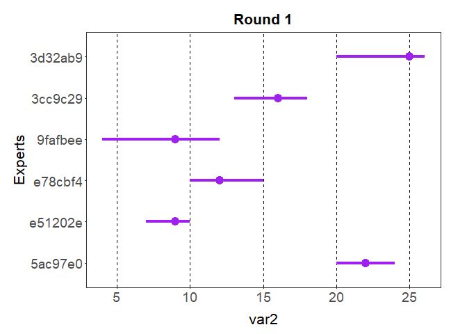
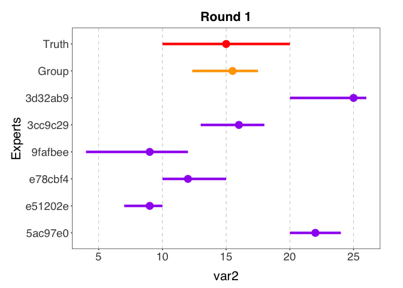
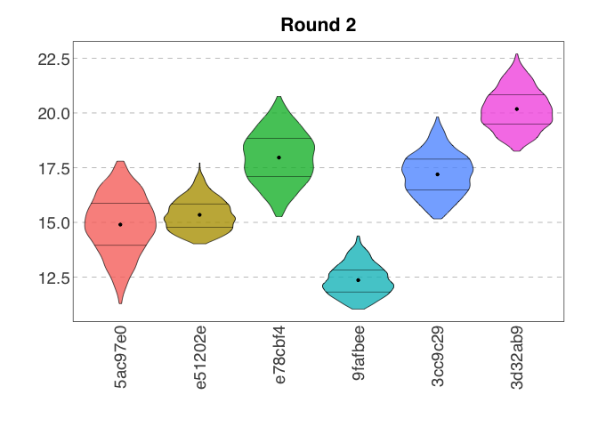
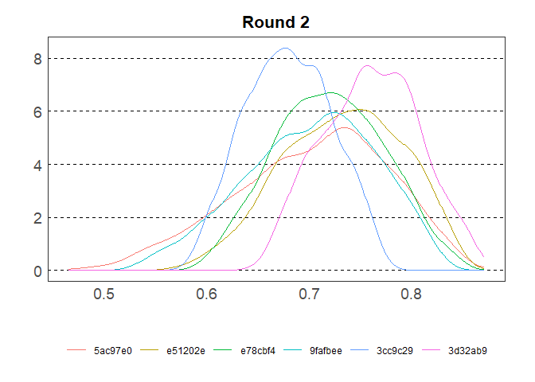

Description
elicitr is an R package used to standardise, visualise and aggregate data from expert elicitation.
The package is in active development and will implement functions based on two formal elicitation methods:
- Elicitation of continuous variables
Adapted from Hemming, V. et al. (2018). A practical guide to structured expert elicitation using the IDEA protocol. Methods in Ecology and Evolution, 9(1), 169–180. https://doi.org/10.1111/2041-210X.12857 - Elicitation of categorical data
Adapted from Vernet, M. et al. (2024). Assessing invasion risks using EICAT-based expert elicitation: application to a conservation translocation. Biological Invasions, 26(8), 2707–2721. https://doi.org/10.1007/s10530-024-03341-2
Installation
You can install the development version of elicitr from GitHub with:
# install.packages("pak")
pak::pak("CREWdecisions/elicitr")How elicitr works
Just as one creates a form to collect estimates in an elicitation process, with elicitr one creates an object to store metadata information. This allows to check whether experts have given their answers in the expected way.
All the functions in the elicitr package start with two prefixes: cont and cat. This design choice is intended to enhance functions discovery. cont functions are used for the elicitation of continuous variables while cat functions for the elicitation of categorical variables.
Getting started
Elicitation of continuous variables
Create the metadata object that will be able to hold the continuous data based on the elicitation design:
my_elic_cont <- cont_start(var_names = c("var1", "var2", "var3"),
var_types = "ZNp",
elic_types = "134",
experts = 6)
#> ✔ <elic_cont> object for "Elicitation" correctly initialised
my_elic_cont
#>
#> ── Elicitation ──
#>
#> • Variables: "var1", "var2", and "var3"
#> • Variable types: "Z", "N", and "p"
#> • Elicitation types: "1p", "3p", and "4p"
#> • Number of experts: 6
#> • Number of rounds: 0Load the continuous data into the metadata object (round_1 and round_2 data are provided as example datasets in the package). This is how your data should look like before they are added to the metadata:
round_1
#> # A tibble: 6 × 9
#> name var1_best var2_min var2_max var2_best var3_min var3_max var3_best
#> <chr> <int> <int> <int> <int> <dbl> <dbl> <dbl>
#> 1 Derek Macle… 1 20 24 22 0.43 0.83 0.73
#> 2 Christopher… 0 7 10 9 0.67 0.87 0.77
#> 3 Mar'Quasa B… 0 10 15 12 0.65 0.95 0.85
#> 4 Mastoora al… -7 4 12 9 0.44 0.84 0.64
#> 5 Eriberto Mu… -5 13 18 16 0.38 0.88 0.68
#> 6 Paul Bol 3 20 26 25 0.35 0.85 0.65
#> # ℹ 1 more variable: var3_conf <int>
round_2
#> # A tibble: 6 × 9
#> name var1_best var2_min var2_max var2_best var3_min var3_max var3_best
#> <chr> <int> <int> <int> <int> <dbl> <dbl> <dbl>
#> 1 Mar'Quasa B… -2 15 21 18 0.62 0.82 0.72
#> 2 Mastoora al… -4 11 15 12 0.52 0.82 0.72
#> 3 Eriberto Mu… 1 15 20 17 0.58 0.78 0.68
#> 4 Derek Macle… 0 11 18 15 0.52 0.82 0.72
#> 5 Christopher… -2 14 18 15 0.55 0.85 0.75
#> 6 Paul Bol 1 18 23 20 0.66 0.86 0.76
#> # ℹ 1 more variable: var3_conf <int>Load the data into the metadata object: Data can also be imported from a GoogleSheet. See the function documentation for more details.
my_elic_cont <- cont_add_data(my_elic_cont,
data_source = round_1,
round = 1)
#> ✔ Data added to "Round 1" from "data.frame"
my_elic_cont <- cont_add_data(my_elic_cont,
data_source = round_2,
round = 2)
#> ✔ Data added to "Round 2" from "data.frame"
my_elic_cont
#>
#> ── Elicitation ──
#>
#> • Variables: "var1", "var2", and "var3"
#> • Variable types: "Z", "N", and "p"
#> • Elicitation types: "1p", "3p", and "4p"
#> • Number of experts: 6
#> • Number of rounds: 2View the data stored in the elicitation object:
cont_get_data(my_elic_cont, round = 1)
#> # A tibble: 6 × 9
#> id var1_best var2_min var2_max var2_best var3_min var3_max var3_best
#> <chr> <int> <int> <int> <int> <dbl> <dbl> <dbl>
#> 1 5ac97e0 1 20 24 22 0.43 0.83 0.73
#> 2 e51202e 0 7 10 9 0.67 0.87 0.77
#> 3 e78cbf4 0 10 15 12 0.65 0.95 0.85
#> 4 9fafbee -7 4 12 9 0.44 0.84 0.64
#> 5 3cc9c29 -5 13 18 16 0.38 0.88 0.68
#> 6 3d32ab9 3 20 26 25 0.35 0.85 0.65
#> # ℹ 1 more variable: var3_conf <int>Plot raw data for variable 2 in round 1:
plot(my_elic_cont, round = 1, var = "var2")
When the elicitation process is part of a workshop and is used for demonstration, it can be useful to show a truth argumenton the plot. This argument can be added as a list of estimates.

Estimates can also be plotted grouped across experts:
plot(my_elic_cont, round = 1, var = "var2",
truth = list(min = 10, max = 20, best = 15),
group = TRUE)
Data can be sampled from the elicitation object:
samp_cont <- cont_sample_data(my_elic_cont, round = 2)
#> ✔ Rescaled min and max for variable "var3".
#> ✔ Data for "var1", "var2", and "var3" sampled successfully using the "basic" method.
samp_cont
#> # A tibble: 18,000 × 3
#> id var value
#> <chr> <chr> <dbl>
#> 1 5ac97e0 var1 1
#> 2 5ac97e0 var1 1
#> 3 5ac97e0 var1 1
#> 4 5ac97e0 var1 -2
#> 5 5ac97e0 var1 -2
#> 6 5ac97e0 var1 -4
#> 7 5ac97e0 var1 0
#> 8 5ac97e0 var1 -4
#> 9 5ac97e0 var1 -4
#> 10 5ac97e0 var1 1
#> # ℹ 17,990 more rowsAnd the sample summarised:
summary(samp_cont)
#> # A tibble: 3 × 7
#> Var Min Q1 Median Mean Q3 Max
#> <chr> <dbl> <dbl> <dbl> <dbl> <dbl> <dbl>
#> 1 var1 -4 -2 -2 -1.01 1 1
#> 2 var2 11.0 14.5 16.3 16.3 18.4 22.7
#> 3 var3 0.460 0.672 0.717 0.715 0.763 0.865And plotted as violin plots:
plot(samp_cont, var = "var2", type = "violin")
Or plotted as density plots:
plot(samp_cont, var = "var3", type = "density")
And can be grouped across experts:
plot(samp_cont, var = "var3", type = "density",
group = TRUE)
Elicitation of categorical variables
Create the metadata object that will be able to hold the categorical data based on the elicitation design: Categories correspond to impact levels and options to islands in Vernet, M. et al. (2024).
my_elic_cat <- cat_start(topics = c("Mechanism1",
"Mechanism2",
"Mechanism3"),
options = c("option_1",
"option_2",
"option_3",
"option_4"),
categories = c("category_1",
"category_2",
"category_3",
"category_4",
"category_5"),
experts = 6)
#> ✔ <elic_cat> object for "Elicitation" correctly initialised
my_elic_cat
#>
#> ── Elicitation ──
#>
#> • Categories: "category_1", "category_2", "category_3", "category_4", and
#> "category_5"
#> • Options: "option_1", "option_2", "option_3", and "option_4"
#> • Number of experts: 6
#> • Topics: "Mechanism1", "Mechanism2", and "Mechanism3"
#> • Data available for 0 topicsLoad the categorical data into the metadata object (topic_1, topic_2 and topic_3 data are provided as example datasets in the package):
Here is an example of data correctly formatted for an elicitation with two options and five categories (only one expert is shown):
name option category confidence estimate
----------------------------------------------------------------
expert 1 option 1 category 1 15 0.08
expert 1 option 1 category 2 15 0
expert 1 option 1 category 3 15 0.84
expert 1 option 1 category 4 15 0.02
expert 1 option 1 category 5 15 0.06
expert 1 option 2 category 1 35 0.02
expert 1 option 2 category 2 35 0.11
expert 1 option 2 category 3 35 0.19
expert 1 option 2 category 4 35 0.02
expert 1 option 2 category 5 35 0.66
my_elic_cat <- cat_add_data(my_elic_cat,
data_source = topic_1,
topic = "Mechanism1")
#> ℹ Estimates sum to 1. Rescaling to 100.
#> ✔ Data added to Topic "Mechanism1" from "data.frame"
my_elic_cat <- cat_add_data(my_elic_cat,
data_source = topic_2,
topic = "Mechanism2")
#> ℹ Estimates sum to 1. Rescaling to 100.
#> ✔ Data added to Topic "Mechanism2" from "data.frame"
my_elic_cat <- cat_add_data(my_elic_cat,
data_source = topic_3,
topic = "Mechanism3")
#> ℹ Estimates sum to 1. Rescaling to 100.
#> ✔ Data added to Topic "Mechanism3" from "data.frame"
my_elic_cat
#>
#> ── Elicitation ──
#>
#> • Categories: "category_1", "category_2", "category_3", "category_4", and
#> "category_5"
#> • Options: "option_1", "option_2", "option_3", and "option_4"
#> • Number of experts: 6
#> • Topics: "Mechanism1", "Mechanism2", and "Mechanism3"
#> • Data available for topics "Mechanism1", "Mechanism2", and "Mechanism3"View the data stored in the elicitation object:
cat_get_data(my_elic_cat,
topic = "Mechanism1")
#> # A tibble: 120 × 5
#> id option category confidence estimate
#> <chr> <chr> <chr> <dbl> <dbl>
#> 1 5ac97e0 option_1 category_1 15 8
#> 2 5ac97e0 option_1 category_2 15 0
#> 3 5ac97e0 option_1 category_3 15 85
#> 4 5ac97e0 option_1 category_4 15 2
#> 5 5ac97e0 option_1 category_5 15 5
#> 6 5ac97e0 option_2 category_1 35 2
#> 7 5ac97e0 option_2 category_2 35 11
#> 8 5ac97e0 option_2 category_3 35 18
#> 9 5ac97e0 option_2 category_4 35 2
#> 10 5ac97e0 option_2 category_5 35 67
#> # ℹ 110 more rowsData can be sampled from the elicitation object using the unweighted or weighted method:
samp_cat_unweighted <- cat_sample_data(my_elic_cat,
topic = "Mechanism1",
method = "unweighted")
#> ✔ Data sampled successfully using "unweighted" method.
samp_cat_unweighted
#> # A tibble: 2,400 × 7
#> id option category_1 category_2 category_3 category_4 category_5
#> <chr> <chr> <dbl> <dbl> <dbl> <dbl> <dbl>
#> 1 5ac97e0 option_1 0.0553 0 0.849 0.0159 0.0798
#> 2 5ac97e0 option_1 0.0974 0 0.842 0.0173 0.0429
#> 3 5ac97e0 option_1 0.0844 0 0.879 0.00321 0.0332
#> 4 5ac97e0 option_1 0.0846 0 0.869 0.00919 0.0367
#> 5 5ac97e0 option_1 0.0995 0 0.843 0.00974 0.0482
#> 6 5ac97e0 option_1 0.0652 0 0.882 0.00673 0.0461
#> 7 5ac97e0 option_1 0.0648 0 0.872 0.0239 0.0394
#> 8 5ac97e0 option_1 0.0795 0 0.837 0.00301 0.0809
#> 9 5ac97e0 option_1 0.0751 0 0.873 0.0277 0.0240
#> 10 5ac97e0 option_1 0.0755 0 0.853 0.00846 0.0626
#> # ℹ 2,390 more rows
samp_cat_weighted <- cat_sample_data(my_elic_cat,
topic = "Mechanism3",
method = "weighted")
#> ✔ Data sampled successfully using "weighted" method.
samp_cat_weighted
#> # A tibble: 1,800 × 7
#> id option category_1 category_2 category_3 category_4 category_5
#> <chr> <chr> <dbl> <dbl> <dbl> <dbl> <dbl>
#> 1 5ac97e0 option_1 0.0143 0.0222 0.00247 0.907 0.0543
#> 2 5ac97e0 option_1 0.0506 0.00409 0.00775 0.853 0.0842
#> 3 5ac97e0 option_1 0.00573 0.0217 0.000407 0.898 0.0738
#> 4 5ac97e0 option_1 0.0280 0.0331 0.0287 0.793 0.117
#> 5 5ac97e0 option_1 0.0228 0.0127 0.00122 0.901 0.0625
#> 6 5ac97e0 option_1 0.0123 0.0801 0.00360 0.878 0.0256
#> 7 5ac97e0 option_1 0.0495 0.00561 0.00775 0.807 0.130
#> 8 5ac97e0 option_1 0.0161 0.0277 0.00144 0.856 0.0985
#> 9 5ac97e0 option_1 0.0214 0.0119 0.00641 0.859 0.101
#> 10 5ac97e0 option_1 0.0266 0.0283 0.00177 0.833 0.110
#> # ℹ 1,790 more rowsAnd the sample summarised:
summary(samp_cat_unweighted, option = "option_2")
#> # A tibble: 5 × 7
#> Category Min Q1 Median Mean Q3 Max
#> <chr> <dbl> <dbl> <dbl> <dbl> <dbl> <dbl>
#> 1 category_1 0.00177 0.102 0.156 0.194 0.322 0.473
#> 2 category_2 0.0128 0.0822 0.129 0.205 0.351 0.612
#> 3 category_3 0.00735 0.128 0.208 0.226 0.290 0.603
#> 4 category_4 0.00138 0.0280 0.0694 0.0958 0.145 0.359
#> 5 category_5 0.00292 0.149 0.246 0.280 0.349 0.787And plotted as violin plots:
plot(samp_cat_unweighted,
title = "Sampled data for Mechanism1")
Similar packages
- {shelf} : Oakley, J. (2024). Package “SHELF” Tools to Support the Sheffield Elicitation Framework. https://doi.org/10.32614/CRAN.package.SHELF
- {prefR} : Lepird, J. (2022). Package “prefeR” R Package for Pairwise Preference Elicitation. https://doi.org/10.32614/CRAN.package.prefeR